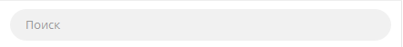
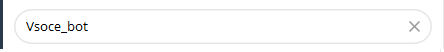

Бот Vsoce Bot - поможет с чем угодно
Помочь перевести текст? легко!
Помочь написать сочинение? Легко
Помочь в програмировании? Легко!!!
1. Глава по помощи запуска бота
1.1. Поиск бота.
1.1.1 Поиск поля ввода.
Чтобы начать пользоваться ботом, вам нужном зайти в телеграм(телефон, компьютер, планшет.).
И найти такое поле:

1.1.2 Ввод названия.
Чтобы найти бот, вам надо ввести в поле(показаное выше), накой текст @Vsoce_bot.
Вот так: 
1.1.3 Запуск бота.
Нажимаем вот сюда:
И теперь у нас открыт бот.
И чтобы нам его запустить надо нажать сюда: